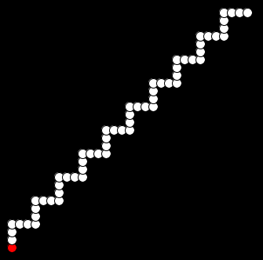

TP 4 - Structures de contrôle et fonctions
Avant de commencer le TP, copiez chez vous les fichiers fournis pour ce TP (dossier code).
Structure de contrôle conditionnelle - switch
Syntaxe :
switch ( variable )
{
case valeur_1 :
instruction_1_1
instruction_1_2
...
break;
case valeur_2 :
instruction_2_1
instruction_2_2
...
break;
...
default :
instruction_d_1
instruction_d_2
}
Exemples :
void menu (int choix )
{
switch ( choix )
{
case 1 :
println ("le jeu commence !");
jouer ();
break ;
case 2 :
solution ();
break ;
default :
println (" entree incorrecte ");
}
}
void keyPressed ()
{
switch ( key )
{
case ’a’ :
case ’e’ :
case ’i’ :
case ’o’ :
case ’u’ :
case ’y’ :
println (" Voyelle ");
break ;
default :
println (" Consonne ou ...");
break ;
}
}
Dessin de formes imposées
Nous allons réaliser ici des dessins de formes (ligne, chemin, carré, etc) à l’aide d’une suite de pastilles blanches.
Prise en main du code fourni
Ouvrez le sketch Processing fourni Sketch_TP04_Formes. Vous obtenez les onglets suivants :
- Sketch_TP04_Formes : c’est l’onglet principal, il contient la fonction setup(), et contiendra toutes vos fonctions,
- Bases : code de base de dessin des formes (vous modifierez uniquement la fonction initForm).
initForm, puis se poursuivent par des pastilles blanches, dessinées les unes après les autres par la fonction
goDisplay. Les changements de direction du dessin sont réalisés grâce aux fonctions
turnLeftet
turnRight.
Question 1 : lecture de code
Lisez bien le code (y compris les commentaires) pour comprendre chaque fonction de base, et le contenu de la fonctionsetupqui a produit les dessins observés.
Question 2 : compréhension
Jouez avec la constante DEPLACEMENT dans l’onglet Bases pour bien comprendre son rôle et testez avec 3 valeurs différentes :
- DEPLACEMENT < DIAMETRE
- DEPLACEMENT = DIAMETRE
- DEPLACEMENT > DIAMETRE
Question 3 : structuration
Dans la fonctionsetup(), déplacez le code des deux chemins dans des fonctions
premierChemin()et
deuxiemeChemin()respectivement.
Question 4 : fonction move()
Dans la fonctionmovede l’onglet
Bases, le changement de direction est actuellement réalisé par une suite de if ... else if. Transformez ce bout de code en le remplaçant par une structure switch.
Question 5 : forme ligne
Écrivez la fonctionvoid ligne(int n)qui affiche une ligne de n pastilles. Puis utilisez-la dans les fonctions
premierCheminet
deuxiemeCheminà la place des bouts de code qui vous semblent opportuns.
Question 6 : forme carré
Écrivez la fonctionvoid carre(int x, int y, int n)qui affiche un carré dont le coin haut-gauche est positionné en (x,y), et dont chaque côté compte n pastilles. Testez cette fonction. Remarque : pensez à la réutilisation de fonctions déjà écrites.
Question 7 : forme escalier
Écrivez la fonctionvoid escalier(int x, int y, int n, int nbMarches)qui affiche un escalier montant de
nbMarchesmarches qui sont chacune de hauteur et largeur n pastilles.
Exemple avec n=7 et nbMarches=5 :
Exemple avec n=4 et nbMarches=10 :

Question 8 : forme escargot
Écrivez la fonctionvoid escargot(int x, int y, int n)qui affiche un "escargot (une "spirale carrée") avec n branches et dont le centre (pastille rouge de départ du dessin) est positionné en (x,y). Exemple avec n=20 :

Zigzag aléatoire
Le but de cette section est de dessiner un zigzag aléatoire d’une certaine longueur fixée (nombre de pastilles fixé). Dans une première version, on ne se préoccupera pas du fait que le zigzag sorte des bordures de l’écran ou non. La deuxième version prendra en compte ce cas-là.
Question 9 : version 1 : zigzag aléatoire sans contrainte
- Écrivez la fonction void randTurn() qui permet aléatoirement de tourner à gauche ou à droite (
turnLeft()
outurnRight()
). - Écrivez la fonction
void zigzag1(int x, int y, int n)
qui affiche un chemin de n pastilles blanches, débutant avec une pastille rouge en (x,y), et qui tourne aléatoirement à gauche ou à droite toutes les 10 pastilles.
Exemple avec n=100 :
Question 10 : version 2 : zigzag aléatoire contraint par les bordures
- Écrivez la fonction boolean
touchBorder()
qui retourne vrai si la pastille courante touche une des bordures de la fenêtre de dessin, faux sinon. - Écrivez la fonction
void zigzag2(int x, int y, int n)
qui affiche un chemin de n pastilles blanches, débutant avec une pastille rouge en (x,y), et qui tourne aléatoirement à gauche ou à droite toutes les 10 pastilles. Si les n pastilles peuvent être dessinées sans toucher aucune bordure de la fenêtre, la fonction affiche "Gagné !", sinon, le dessin s’arrête dès qu’une pastille touche une bordure et la fonction affiche "Perdu !".
Exemple avec n=100 :
Animations avec draw()
Question 11 : animation du zigzag
Pour pouvoir voir à l’écran l’animation du zigzag (c’est-à-dire voir les pastilles se dessiner les unes après les autres) :
- introduisez dans le code la fonction
void draw()
de Processing, - répartissez le code de la fonction
void zigzag2
entre les fonctionssetup()
etdraw()
, en remarquant que la structure de boucle n’est plus nécessaire (la boucle de dessin étant gérée maintenant pardraw()
), - pour arrêter l’appel à la fonction
draw()
une fois affiché "Gagné" ou "Perdu", vous pouvez utiliser la fonction ProcessingnoLoop()
.
Supplément : Suite de Syracuse
On considère la suite entière définie, pour une valeur u1 positive fixée, par :
On conjecture que, quel que soit u1 > 0, cette suite converge vers le cycle (1; 4; 2). On appelle vol associé à une valeur donnée de u1 la liste des valeurs prises par la suite entre u1 et uk, où k est le plus petit entier tel que uk = 1.
Question 12 : Syracuse
- Compilez et exécutez le programme fourni dans le sketch sketch_TP04_Syracuse. Il ne fonctionne pas correctement (boucle infinie...). Grâce au mode Debug et/ou aux affichages suivants, corrigez ce programme.
- Modifiez le programme précédent pour qu’il affiche la longueur du vol, c’est-à-dire le premier k tel que uk = 1.
- Modifiez le programme précédent pour qu’il affiche aussi l’altitude maximale, c’est-à-dire le plus grand élément du vol.
- Rajoutez au programme une visualisation graphique de la courbe de Syracuse, par exemple :